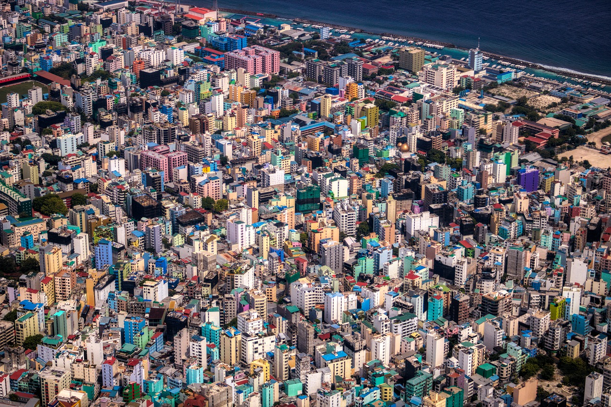
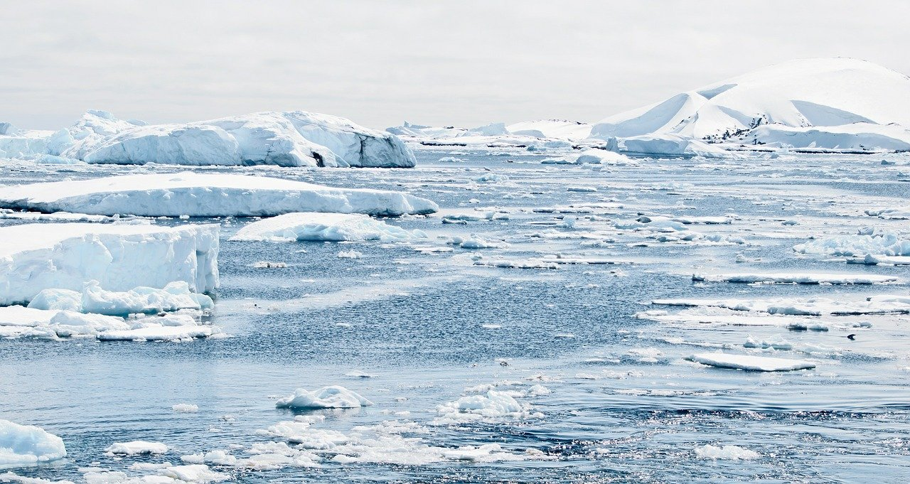

HOME PAGE
2 still missing after wildfires in Colorado
After a fierce wildfire affected Colorado's vast sprawiling forests, many are still struggling to recover.


The Maldives is sinking. How can we stop it?
Global warming is taking a toll on our ice sheets.
What is Bettearth and what is our goal?
Bettearth: For A Better Future